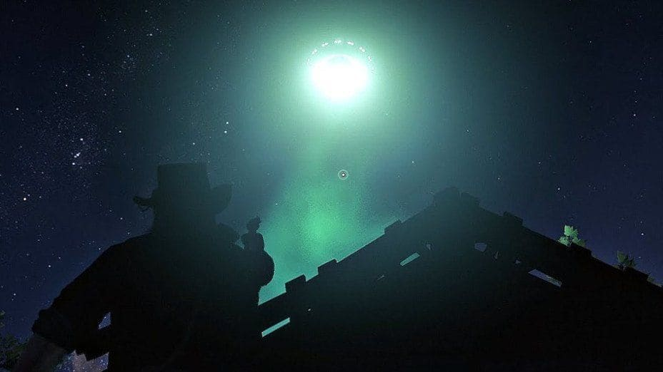
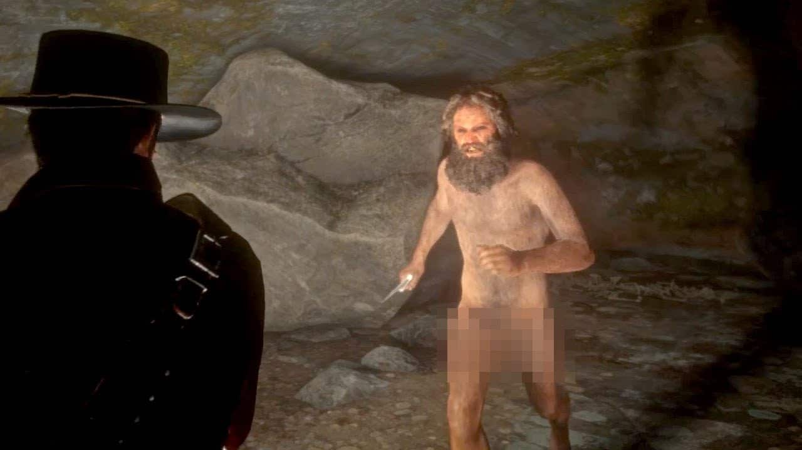
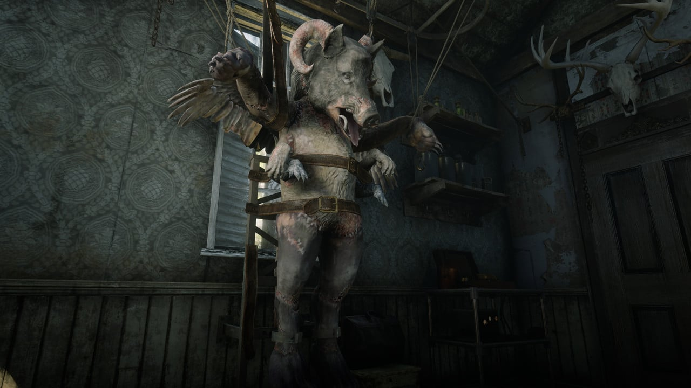

Mistérios sobre Red Dead Redemption 2
A lista de mistérios e segredos de Red Dead Redemption 2 é enorme. A Rockstar Games desenvolveu uma obra repleta de referências e momentos únicos para os jogadores encontrarem por todo o mapa do fim do Velho Oeste. O MeuPlayStation teve a difícil tarefa de separar dez dos principais segredos do game. Tem de tudo: OVNIs, Diabo, robô, vampiro e muito mais. Confira:

OVNI entre os segredos de Red Dead Redemption 2
Não adianta, quem nunca leu diversas matérias de casos onde OVNIs aparecerem por todos os cantos do mundo? Os relatos são sempre repletos de mistérios. No pico do Monte Shann, vá no período da noite para encontrar uma cabana com o teto inacabado. Espere algum tempo e uma forte luz verde aparecerá. Ao olhar para cima, é possível ver claramente uma espécie de nave não identificada.
Encontre o Lobisomen em Roanoke Valley
Pelo Vale Roanoke, uma pessoa nua conhecida como o “Homem-Fera” é um dos grandes segredos de Red Dead Redemption 2. Ao chegar perto, ele gritará e fugirá para a sua caverna. Siga ele, mas cuidado que lobos estarão esperando para assustar seu cavalo e atacar. O homem também não deixará barato por invadir sua “propriedade” e avançará em cima de Arthur com uma faca. Toda situação é extremamente curiosa. Primeiro, por ele estar “peladão”. Além disso, parece que consegue fazer amizades facilmente com lobos. Certamente faz jus ao seu apelido de “Homem-Fera”.
ManBearPig de South Park
South Park, famosa animação americana, já teve diversas referências à Red Dead. A Rockstar não deixou de lado também sua paixão pela série ao introduzir uma versão assustadora do ManBearPig. É possível encontrar o easter egg em uma cabana próxima ao Posto Comercial de Van Horn.
